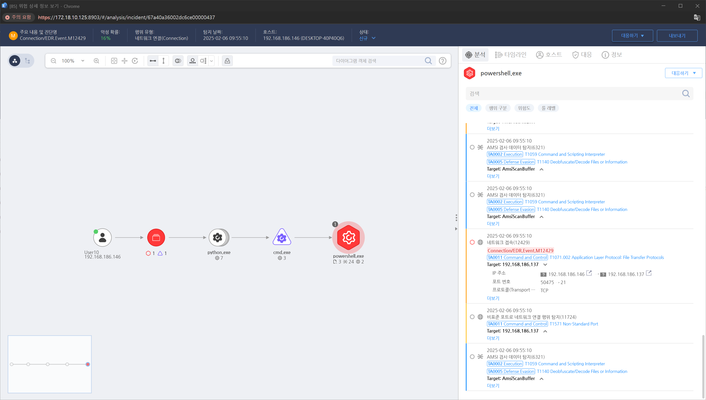

MITRE ATT&CK 액션을 기준으로 대응 방안을 작성

데이터 유출 탐지 및 차단을 위해 DLP(Data Loss Prevention) 솔루션을 적용
방화벽 및 프록시 규칙을 강화하여 신뢰할 수 없는 외부 도메인으로의 트래픽 제한
SSL/TLS 검사 활성화로 암호화된 트래픽에서의 데이터 유출 탐지
최소 권한 원칙 적용 (Principle of Least Privilege, PoLP)
RBAC(Role-Based Access Control) 활용하여 민감한 데이터 접근 제한
관리자 계정과 일반 사용자 계정 분리
SIEM(Security Information and Event Management) 솔루션을 사용하여 데이터 이동 감시
네트워크 트래픽 이상 탐지를 위해 IDS/IPS 및 UEBA(User and Entity Behavior Analytics) 적용
중요한 데이터가 전송될 경우 경고를 발생하도록 로그 감시 정책 설정
기업 내부 데이터 보호 정책을 강화하고 주기적인 보안 교육 진행
직원들에게 의심스러운 이메일, 피싱, 소셜 엔지니어링 기법에 대한 경각심 고취
Action 실행시 함께 영향을 받는 다른 Techniqes
| ATT&CK |
|---|
| T1020 |
|D3FEND| |:-----------:|